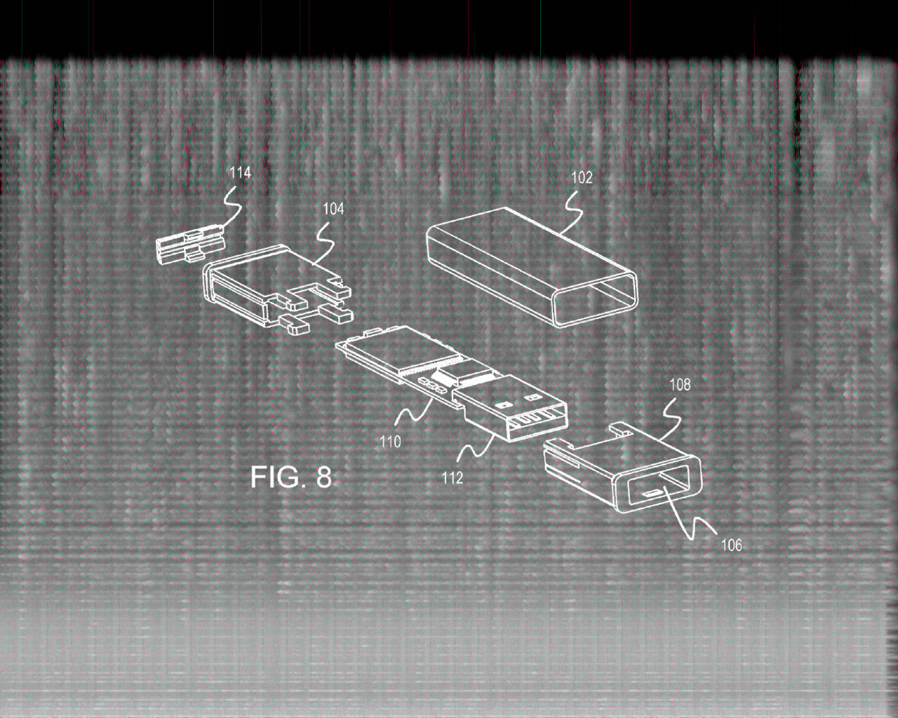
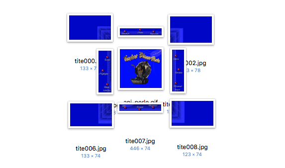
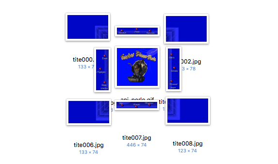

FUTURE FOSSILS
2019
Collaborative research
Using methods drawn form archaeology, material culture studies and critical design, this project is a
speculation on the designed entities that will become signals in the earth’s geological strata.
It is an exploration of what concepts like deep time and hyperobjects mean in today’s environment,
looking at their possible consequences in a not so distant future.
What is the span of life of a digital file, trapped in the degrading carcass of the storage hosting it,
with its plastic case and microchips?
What is the process of archaeological restoration of a fossil digital file found inside its rotting, decaying body?
The outcomes of this project include ceramic objects, written texts, images and a collectively produced publication.



© 2021 Alessandro Celli
